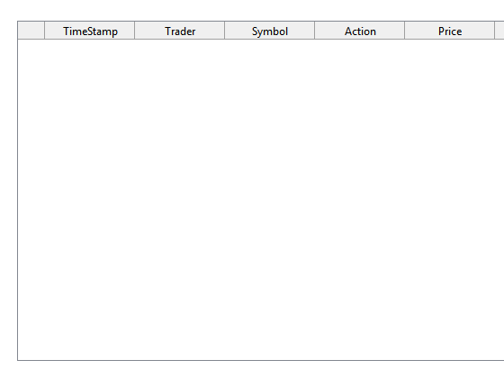
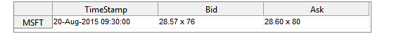
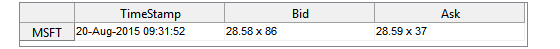
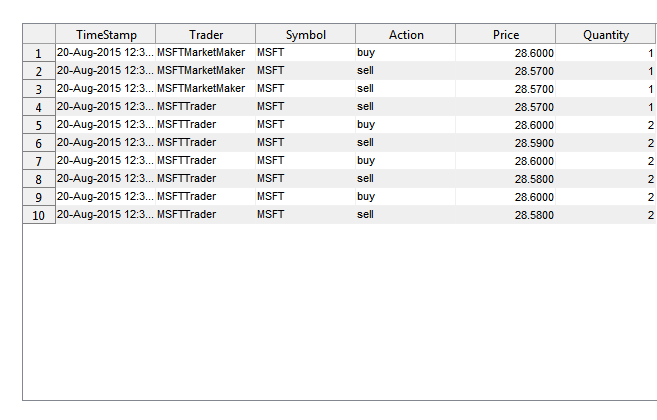

Multiple Trader Example
Two traders are in this simulation. The first is a momemntum trader. The second is a market maker. The momementum trader's goal is to make profit, the market maker's goal is to provide liquidity with no profit/loss from the trades (the market maker will make money from rebates and other incentives from the exchange).
Contents
Load the data
load MSFTData dates = (today+0.39584) + (0:length(msftask)-1)'./184610; data = table(repmat({'MSFT'},size(msftask)),msftask,msftbid,... randi(100,size(msftask)),randi(100,size(msftask)),... cellstr(datestr(dates)),repmat({'quote'},size(msftask)),... 'VariableNames',{'Symbol','AskPrice','BidPrice','AskSize','BidSize',... 'DateTime','Type'});
Create a Data Feed
theFeed = DataFeedReplayService(data) theFeed.Data clear data dates;
theFeed =
DataFeedReplayService with properties:
ReplaySpeed: 2.00
Index: 1.00
SymbolList: {'MSFT'}
Data: [50000x1 struct]
Period: 2.00
Timer: [1x1 timer]
ans =
50000x1 struct array with fields:
Symbol
AskPrice
BidPrice
AskSize
BidSize
DateTime
Type
Open Up Quote Monitor
Test the Data Feed
qm = createNBBODisplay(theFeed.SymbolList); qml = addlistener(theFeed,'QuoteNotification',... @(~,e) updateNBBODisplay(qm,e.Data,theFeed.SymbolList)); theFeed.start pause(10) theFeed.stop theFeed.Index = 1; % rest the data start index
Create a Broker
Have Broker listen to quotes
b = Broker;
bl = addlistener(theFeed,'QuoteNotification',@(~,e) quoteUpdate(b,e.Data));
theFeed.start
pause(10)
theFeed.stop
theFeed.Index = 1;
Create Traders
addpath('Models') bmmMSFT = BayesianMarketMaker(28.585,0.13,'MSFT','MSFTMarketMaker'); lltMSFT = LeadLagTrader(5,63,'MSFT','MSFTTrader');
Connect Trader to Broker
addBroker(bmmMSFT,b); addBroker(lltMSFT,b);
Have them listen to theFeed
mml = addlistener(theFeed,'QuoteNotification',@(~,e)strategy(bmmMSFT,e.Data)); tl = addlistener(theFeed,'QuoteNotification',@(~,e)strategy(lltMSFT,e.Data));
Open Up Trade Monitor
tm = createTradeDisplay();
Add the updateTradeDiplay to listen to property change in broker trade table.
tml = addlistener(b,'TradeBook','PostSet',... @(~,e)updateTradeDisplay(tm,e.AffectedObject.TradeBook));
setPeriod(theFeed,0.5)
Now Run the Simulation
start(theFeed)
Stop the display updating to speed up simulation
pause(60*2) % wait for 2 minute
delete(tml)
delete(qml)
setPeriod(theFeed,0.1)
  while theFeed.Index < length(theFeed.Data) % wait for all data to stream pause(10) end
Error while evaluating TimerFcn for timer 'timer-1' Index exceeds matrix dimensions.
Shut It Down
stop(theFeed)
View trader's running profit and current positions. Also look at last 5 trades in the trade log
display(lltMSFT) display(bmmMSFT) b.TradeBook(end-5:end,:)
lltMSFT =
LeadLagTrader with properties:
Symbol: 'MSFT'
TraderID: 'MSFTTrader'
Broker: [1x1 Broker]
pos: 2.00
profit: -27.53
N: 5.00
M: 63.00
bmmMSFT =
BayesianMarketMaker with properties:
Symbol: 'MSFT'
TraderID: 'MSFTMarketMaker'
Broker: [1x1 Broker]
pos: 0
profit: 0.15
alpha: 0.90
sigma: 0.13
P0: 28.59
ans =
Symbol FillPrice FillQty QuoteTime TimeStamp TraderID Action
______ _________ _______ ______________________ ______________________ _________________ ______
'MSFT' 27.99 1.00 '20-Aug-2015 15:55:06' '20-Aug-2015 14:01:55' 'MSFTMarketMaker' 'sell'
'MSFT' 27.99 2.00 '20-Aug-2015 15:55:07' '20-Aug-2015 14:01:55' 'MSFTTrader' 'sell'
'MSFT' 28.00 1.00 '20-Aug-2015 15:55:07' '20-Aug-2015 14:01:55' 'MSFTMarketMaker' 'buy'
'MSFT' 27.98 1.00 '20-Aug-2015 15:56:09' '20-Aug-2015 14:02:08' 'MSFTMarketMaker' 'buy'
'MSFT' 27.97 2.00 '20-Aug-2015 15:57:01' '20-Aug-2015 14:02:19' 'MSFTTrader' 'buy'
'MSFT' 27.96 1.00 '20-Aug-2015 15:59:16' '20-Aug-2015 14:02:48' 'MSFTMarketMaker' 'sell'